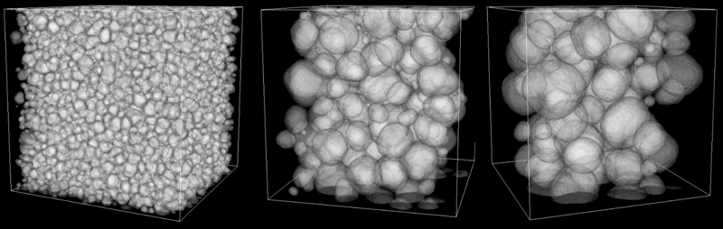
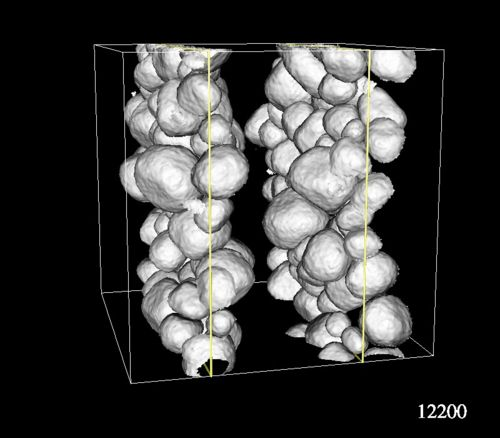

Gilberto provided .vtk files for a 300^3 lattice of wet foam sim. We pre-processed the ascii .vtk files to remove the "ClusterId" field, reducing the size of each file considerably - now each file is about 250M (440M originally).
We perform a semi-transparent rendering of only "interior" bubbles, i.e. we do not render those that touch (and wraparound due to the period boundaries) the X (left-right) or Z (front-back) faces of the domain. However, we do render those that touch/wraparound the Y (top-bottom) faces.

Rendering of bubbles interesecting the X and Z boundaries.
We render bubbles that intersect two X slices (x=75 and x=225) and rotate each MCS frame for motion in a movie:
